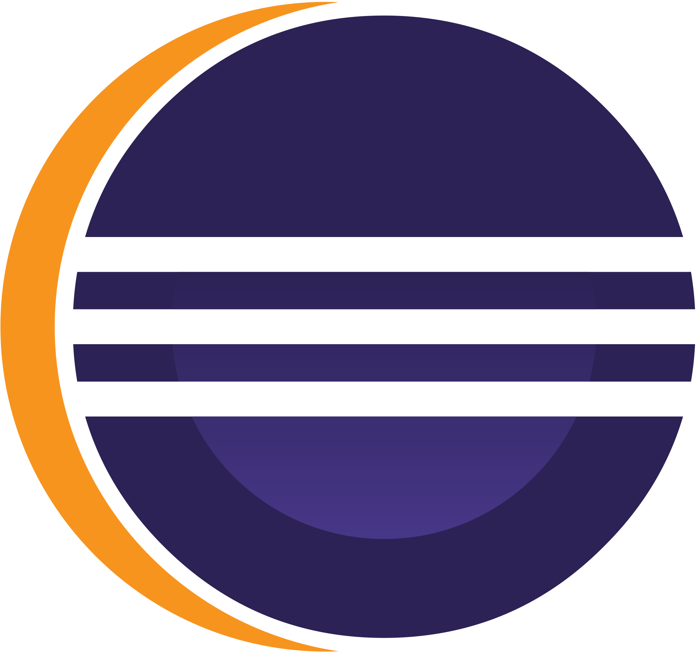

Analista de Teste/QA
Estudante de Análise e Desenvolvimento de Sistemas em meu último semestre. Busco ingressar na área de Testes de Software QA, onde espero aplicar meus conhecimentos e habilidades para garantir a qualidade dos produtos de software e contribuir para o sucesso da equipe.
Desejo atuar com testes de software, realizando testes de caixa preta em sistemas web e mobile.
Minhas habilidades inclui execução de testes funcionais, exploratórios e de interface para validação de requisitos funcionais e não funcionais e para garantir a qualidade de softwares
Linguagem de programação Java com a IDE Eclipse e IntelliJ, Lógica de programação, Automação de testes de software com Selenium Webdriver em Java, BDD com Cucumber, Postman para testes de API, Jmeter para testes de desempenho, Banco de dados com MySQL e PostgreSQL, Git e GitHub, HTML5 e CSS3.
Conhecimentos em Cypress para automação Web, Ferramenta Jira para gestão de projetos ageis, e possuo as certificações de Scrum, Kanban e RWVC.

FORMAÇÃO
Centro Universitário do Distrito Federal - UDF
Análise e Desenvolvimento de Sistemas - (08/2021 - 06/2023)
EXPERIÊNCIA PROFISSIONAL
Auxiliar de Escritório
VRFlex Suprimentos Industriais - (01/2021 - 12/2022)
Hydrautec Hidráulica - (06/2015 - 12/2020)
- Análise de requisitos dos clientes e desenvolvia casos de teste detalhados para garantir a conformidade dos materiais com as especificações.
- Executava testes de aceitação para verificar se os materiais atendiam aos critérios estabelecidos, garantindo a qualidade dos produtos.
- Elaborava relatórios detalhados para a diretoria da empresa, incluindo análise crítica dos resultados obtidos nas vendas realizadas.
- Gerenciamento de compras e vendas de materiais industriais, com análise crítica das propostas comerciais e busca por oportunidades de melhoria de preços e condições de pagamento.
- Contribuí para o aumento do faturamento mensal otimizar processos de negociação, resultando em um crescimento de clientes de 10 para 35 durante o período de atuação
- Atendimento ao cliente com foco na satisfação e no alcance de metas de vendas, identificando suas necessidades e recomendando os produtos mais adequados.
- Análise para monitorar e otimizar as operações de compras e vendas de materiais industriais, analisando métricas como tempo de entrega, preço de aquisição e margem de lucro.
- Emissão e faturamento de notas fiscais eletrônicas, com amplo conhecimento sobre o arquivo XML e as obrigações fiscais relacionadas.
CERTIFICAÇÕES E CURSOS COMPLEMENTARES
- Certificação - Kanban Foundation KIKF (11/2020)
- Certificação - Scrum SFCP (11/2020)
- Certificação - Remote Work and Virtual Collaboration (11/2020)
- Cursos - Git e GitHub (03/2023)
- Cursos - Algoritmos e Lógica de Programação (03/2023)
- Cursos - Testes de Software Manual e Testes Automatizados (04/2023)
- Cursos - Java
Minhas Skills
Conheça as tecnologia que domino:
Front-end
Back-end
Database
Frameworks Back-end
Frameworks Front-end
Tools